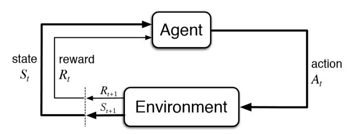

Responsible AI in the Age of Generative AI#
Generative AI (GenAI) systems, such as large language models, represent arguably one of the most exciting recent advances in the field of AI. The same responsible AI issues, including fairness, interpretability, and privacy, remain highly relevant to GenAI, and they sometimes take on different forms. Meanwhile, GenAI also presents unique challenges, related to the broader alignment issue.
This chapter provides a brief exposition of responsible AI in GenAI systems.
Same Problems, New Challenges#
GenAI and Fairness#
GenAI systems have been shown to exhibit biased generations, likely due to existing bias during pre-training;
This bias is hard to remove / rectify after the fact.
GenAI and Interpretability#
People outside the field are often surprised and alarmed to learn that we do not understand how our own AI creations work. – Dario Amodei, The Urgency of Interpretability
GenAI systems are exceedingly hard to make sense of:
Anthropic quote
mechanistic interpretation
illusion of interpretability as responses from GenAI systems themselves
explaining language models Enguehard [Eng23].
Mechanistic interpretation:
software tool: TransformerLens
taxonomy library: A Comprehensive Mechanistic Interpretability Explainer & Glossary
GenAI and Privacy#
GenAI brings new challenges to privacy protection:
lack of transparency to data used during pre-training;
prompt hacking / injection reveals personal information
tradeoff between automation and privacy
Jailbreaking represents a prominent threat for GenAI model. Jailbreaking can sometimes be achieved via surprising routes (e.g., “adversarial poetry”, [BPP+25]).
GenAI and Security#
NIST new guideline on rethinking cybersecurity for the AI era
CISCO new comprehensive framework for AI security
New Challenge: AI Alignment#
Yodovsky quote
Definition of AI Aligment
A Very Brief Introduction to Reinforcement Learning#
Reinforcement learning is learning what to do - how to map situations to actions - so as to maximize a numerical reward signal. – Sutton and Barto, Reinforcement Learning (Chapter 1.1)
Reinforcement learning is the paradigm of learning from interactions, about how to act under what situations. In a sense, RL is closer to how humans learn various skills: we learn by exploring and interacting with the world around us.
Reinforcement learning has been successfully applied in game playing, robotics, and aligning large language models.
A reinforcement learning system is often described by the following agent-environment framework.

Let’s look at each component:
Agent is the decision-maker who takes certain action in a given situation;
Environment contains everything outside the agent. It is what the agent interacts with.
In response to the agent’s action, the environment produces a reward. The agent tries to learn from the reward feedback to figure out what’s the best action(s);
The environment is characterized by its states, which, roughly speaking, are the “situations” that the agent is facing. The states may change as a result of the agent’s actions, and the states also affect the agent’s actions;
Each action that the agent can take has certain value, which describes how good it is in achieving high reward;
A mapping between the agent’s actions and the environment’s states is called the policy. RL algorithms are trying to learn optimal policy from interactions.
A fundamental issue in reinforcement learning is the tradeoff between exploration vs. exploitation. Roughly speaking, Exploration means trying out different possible actions to see which one(s) work better; and Exploitation means keeping taking the action that appears to be the best based on currently available information.
Balancing exploration and exploitation is the central consideration of most reinforcement learning algorithm design. Having too much exploration is wasteful and having too much exploitation can be myopic (maybe there is a much better option that you haven’t tried).
Why is Alignment Hard?#
inherent tradeoff among different human preferences
inevitable ambiguity in human preference and how to achieve it
reward hacking
New Challenge: Robustness#
Lack of robustness with respect to task-irrelevant variations:
data fitting
math
level-k thinking
semantic leakage [GBL+25]